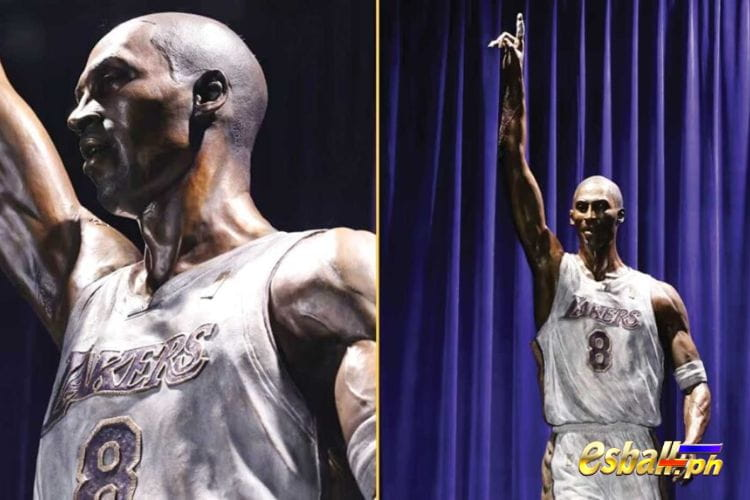

- All
- Pinnacle Sports Betting
- PBA News 2024
- All PBA Results
- Mga 2023 PBA Basketball
- Boxing Mga Prediksyon
- Sport na Online Sabong
- Mga 2023 FIBA World Cup Qualifiers
- Mga Football Player Information
- Mga gabay sa Sports Betting Online
- Mga Betting Terms Wikipedia
- Mga 2022 PBA Basketball
- FIFA World Cup Sa 2022
- NBA News 2024
Sa isang napakahalagang seremonya, inihayag kamakailan ng Los Angeles Lakers ang una sa tatlong commemorative statues na nakatuon sa maalamat na si Kobe Bryant. Nakatayo sa taas na 19 talampakan at tumitimbang ng malaking 4,000 pounds, ang bronze statue na ito, na ginawa ni Julie Rotblatt Amrany, ay dinarayo na ngayon ang Star Plaza sa labas ng Staples Center.
Isang Simbolo ng Tagumpay: Kobe Bryant Statue Chronicles 81 Points Classic
Sa gitna ng trilogy na ito ay ang unang estatwa, na nagbibigay-pugay sa iconic na 81-point game ni Kobe. Inihayag ni Vanessa Bryant, ang biyuda ni Kobe, ang mahusay na nililok na representasyong ito, na ipinakita ang Black Mamba sa isang makapangyarihang pose mula sa makasaysayang gabing iyon noong 2006. Ang estatwa ay hindi lamang nagbibigay-buhay sa husay sa basketball ni Kobe ngunit naglalaman din ng diwa ng katatagan, determinasyon, at paghahangad ng kadakilaan na tinukoy ang kanyang tanyag na karera.

Beyond the Court: A Family Legacy in Bronze
Inihayag ni Vanessa Bryant na dalawa pang estatwa ang ginagawa, bawat isa ay kumukuha ng natatanging panahon ng buhay ni Kobe. Ang ikalawang rebulto ay magsasaloob ng kakanyahan ng numero 24 na panahon ni Kobe—isang panahon na minarkahan ng kapanahunan, pamumuno, at patuloy na kahusayan. Ang huling rebulto ay magiging isang matinding pagpupugay kay Kobe at sa kanyang anak na si Gigi, na ipinagdiriwang ang kanilang mga pangarap at ang malalim na epekto na mayroon sila sa mundo.
Kobe's Symphony: A Tapestry of Legacy and Inspiration
Habang inaabangan namin ang pagkumpleto ng trilogy ng Kobe Bryant Statue, sinisiyasat namin ang mayamang tapiserya ng kanyang legacy. Higit pa sa basketball court, ang impluwensya ni Kobe ay umaalingawngaw sa mga henerasyon, na nagbibigay-inspirasyon sa mga indibidwal na yakapin ang Mamba Mentality—isang pilosopiya ng walang humpay na determinasyon at paghahangad ng kahusayan.
The 81-Point Symphony: A Virtuoso Performance Immortalized
Ang 81-point game ni Kobe, isang magnum opus sa loob ng kanyang karera, ay mayroong espesyal na lugar sa kasaysayan ng basketball. Ang unang estatwa, na kumukuha ng esensya ng birtuoso na pagganap na ito, ay nagsisilbing paalala ng mapagkumpitensyang apoy ni Kobe, walang sawang pagkagutom para sa tagumpay, at ang kanyang kakayahang itaas ang sarili kapag ang mga pusta ay pinakamataas.
Metamorphosis of Number 24: A Celebration of Growth and Leadership
Ang pangalawang estatwa na nakatuon sa numerong 24 na panahon ni Kobe ay sumisimbolo ng higit pa sa isang pagbabago sa numero. Ito ay nagpapahiwatig ng isang metamorphosis—isang pagbabago mula sa kagalakan ng kabataan tungo sa karunungan ng karanasan. Ang paglalahad ng rebultong ito ay magiging isang pagdiriwang ng paglago, katatagan, at walang hanggang diwa ng isang kampeon.

Legacy ni Kobe: Mga Rebulto bilang Tagapangalaga ng Memorya
Ang mga estatwa ay hindi lamang mga istruktura ng metal at bato; ang mga ito ay mga portal sa kakanyahan ni Kobe, na nag-aanyaya sa mga tagahanga na muling buhayin ang mahika, ang mga tagumpay, at ang walang humpay na paghahangad ng kadakilaan na tumutukoy sa kanyang karera. Habang hinihintay natin ang paglalahad ng mga natitirang rebulto, ang pag-asam ay hindi lamang para sa mga commemorative structures kundi para sa mga buhay na parangal na nagbibigay inspirasyon sa mga susunod na henerasyon.
Isang Salaysay Higit pa sa Basketbol: Ang Epekto ni Kobe sa Kultura at Pagkukuwento
Ang pamana ni Kobe ay lampas sa mga limitasyon ng sports. Ang kanyang pakikipagsapalaran sa pagkukuwento sa pamamagitan ng panitikan at paggawa ng pelikula ay nagpakita ng isa pang aspeto ng kanyang pagiging malikhain. Ang mga estatwa, na nakahanda sa tahimik na pagpupugay, ay nagtataglay ng diwa ng Mamba Mentality—isang paalala na ang kadakilaan ay nakukuha sa pamamagitan ng pagpupursige, pagsusumikap, at walang humpay na paniniwala sa mga kakayahan ng isang tao.
The Everlasting Echo: Ang Legacy ni Kobe Bryant sa Bronze
Sa grand unveiling ng mga commemorative statues ni Kobe Bryant, nasasaksihan natin hindi lamang ang pagdiriwang ng kadakilaan ng basketball kundi isang testamento sa walang hanggang kapangyarihan ng espiritu ng tao. Ang mga estatwa ay naninindigan bilang mga testamento sa ideya na ang mga alamat ay hindi nakakulong sa mga pahina ng mga aklat ng kasaysayan ngunit nabubuhay, nagbibigay-inspirasyon sa mga susunod na henerasyon.
Habang nagpapaalam tayo sa pisikal na presensya ni Kobe Bryant, ang mga estatwa ay tumatayo bilang walang hanggang tagapag-alaga ng kanyang pamana. Ipinapaalala nila sa atin na ang kuwento ay malayo pa sa pagtatapos; patuloy itong naglalahad sa puso't isipan ng mga may dalang tanglaw ng Mamba Mentality. Ang mga estatwa ay hindi lamang monumento; ang mga ito ay buhay na pagpupugay sa isang tao na lumaban sa mga limitasyon, tumanggap ng mga hamon, at nag-iwan ng walang hanggang bakas sa mundo.
Sa engrandeng tapestry ng kasaysayan ng basketball, ang pamana ni Kobe Bryant ay isang sinulid na pinagtagpi ng madamdaming himig ng pagtatagumpay at ang nakakatakot na alingawngaw ng trahedya. Ito ay isang salaysay na lumalampas sa mga tagumpay at pagkatalo, mga kampeonato at mga parangal. Ito ay isang kuwento na sumasalamin sa espiritu ng tao—isang odyssey na minarkahan ng katatagan, pagnanasa, at isang hindi natitinag na pangako sa pag-iiwan ng hindi maalis na marka sa mundo.
Ang Mamba Mentality: Isang Blueprint para sa Tagumpay at Katatagan
Ang epekto ni Kobe Bryant sa laro ay lumampas sa korte. Ang Mamba Mentality, isang termino na nilikha mismo ni Kobe, ay naging isang blueprint para sa tagumpay at katatagan hindi lamang sa sports kundi sa buhay. Binigyang-diin nito ang walang humpay na paghahangad ng mga layunin ng isang tao, isang pangako sa patuloy na pagpapabuti, at ang kakayahang tanggapin ang mga hamon na may walang takot na pag-iisip.
Habang pinagmamasdan ng mga tagahanga ang mga Kobe Bryant Statue, hindi lamang nila nasaksihan ang isang pagpupugay sa icon ng basketball kundi isang repleksyon ng Mamba Mentality na patuloy na nagbibigay inspirasyon sa mga indibidwal sa buong mundo. Ang mga estatwa ay nagsisilbing mga paalala na ang paghahangad ng kahusayan ay isang walang hanggang paglalakbay—isang paglalakbay na nangangailangan ng dedikasyon, pagnanasa, at hindi natitinag na paniniwala sa mga kakayahan ng isang tao.
Isang Diwang Makatao: Ang Epekto ni Kobe Higit pa sa Basketbol
Ang pamana ni Kobe Bryant ay higit pa sa mga istatistika at pagkilala. Ang kanyang makataong pagsisikap, kabilang ang kanyang trabaho sa Kobe at Vanessa Bryant Family Foundation, ay nagpakita ng kanyang pangako sa paggawa ng positibong epekto sa komunidad. Ang mga estatwa, sa kanilang matatag na presensya, ay sumasagisag hindi lamang sa kadakilaan sa palakasan kundi pati na rin ng isang mahabaging kaluluwa na naghangad na itaas ang iba.
A Legacy in Motion: Nagpapatuloy ang Kwento ni Kobe Bryant
Ang pag-unveil ng mga Kobe Bryant Statue ay minarkahan hindi isang endpoint kundi isang pagpapatuloy ng salaysay. Habang nagbibigay-pugay ang mga tagahanga, tagahanga, at naghahangad na mga atleta, nagiging bahagi sila ng mas malaking kuwento—isang kuwentong lumalampas sa mga henerasyon at nagbibigay-inspirasyon sa paghahangad ng kadakilaan sa lahat ng aspeto ng buhay.
Ang Pandaigdigang Epekto: Ang Pag-abot ni Kobe sa mga Kontinente
Ang impluwensya ni Kobe Bryant ay lumampas sa mga hangganan ng Estados Unidos. Ang kanyang pandaigdigang epekto ay makikita sa hindi mabilang na mga tagahanga sa buong mundo na yumakap sa Mamba Mentality. Ang mga estatwa ay nagiging mga beacon ng inspirasyon, na nag-uugnay sa mga tao mula sa iba't ibang kultura at background sa ilalim ng karaniwang sinulid ng nagtatagal na pamana ni Kobe.
Ang Matagal na Presensya ni Kobe: Isang Tagapangalaga ng mga Pangarap at Adhikain
Ang mga Kobe Bryant Statue, kasama ang kanilang kahanga-hangang presensya, ay naging tagapag-alaga ng mga pangarap at adhikain. Tahimik nilang hinihikayat ang mga indibidwal na mangarap ng malaki, magtrabaho nang husto, at magtiyaga sa harap ng kahirapan. Ang mga naghahangad na mga atleta, mga batang talento, at mga indibidwal mula sa lahat ng antas ng pamumuhay ay nakakahanap ng aliw at inspirasyon sa matalim na tingin ng Black Mamba.
Ang Susunod na Kabanata: Ang Epekto ni Kobe sa Hinaharap na Henerasyon
Sa paglalahad ng kwento ni Kobe Bryant sa pamamagitan ng mga estatwa, itinatanong nito: Ano ang susunod na kabanata? Ang epekto ng pamana ni Kobe sa mga susunod na henerasyon ay hindi nasusukat. Ang mga estatwa, na tumatayo bilang mga sentinel ng inspirasyon, ay hinahamon ang mga indibidwal na magsulat ng kanilang sariling mga kuwento ng katatagan, kahusayan, at ang walang patid na paghahangad ng mga pangarap.

Pag-alala kay Kobe: Isang Paglalakbay sa mga Rebulto
Ang paglalakad sa Star Plaza, na napapalibutan ng mas malalaking Kobe Bryant Statue, ay nagiging isang paglalakbay sa panahon at damdamin. Ang bawat rebulto ay nagsasabi ng isang kabanata ng kuwento ni Kobe Bryant—ng tagumpay, paglaki, pamilya, at isang pamana na lumalampas sa mga hangganan ng basketball court.
Ang Grit at Grace: Isang Dual Essence na Nakuha sa Bronze
Nakukuha ng mga estatwa ang dual essence ni Kobe Bryant—ang katapangan ng isang mahigpit na katunggali sa court at ang biyaya ng isang mapagmahal na ama at asawa sa labas ng court. Ito ay isang nuanced portrayal na sumasalamin sa pagiging kumplikado ng isang tao na nagsuot ng maraming sumbrero at gumanap ng napakaraming papel na may hindi natitinag na pangako.
Sining ni Kobe Bryant: The Aesthetics of Greatness
Ang mga estatwa, na lampas sa kanilang simbolikong kahalagahan, ay isang testamento sa aesthetics ng kadakilaan. Ang craftsmanship ni Julie Rotblatt Amrany ay nagdudulot hindi lamang ng pisikal na pagkakahawig kundi isang artistikong representasyon na kumukuha ng diwa, damdamin, at diwa ni Kobe Bryant. Nagiging sayaw ang interplay ng liwanag at anino sa bronze, na sumasalamin sa dinamikong katangian ng epekto ni Kobe.
From Chicago to Los Angeles: A Journey Etched in Bronze
Ang paglalakbay ni Kobe Bryant, mula sa kanyang pinagmulan sa Chicago hanggang sa pagiging isang Lakers legend sa Los Angeles, ay nakaukit sa tansong mga contour ng mga estatwa. Ito ay isang heograpikal at emosyonal na odyssey na sumasalamin sa mga indibidwal na sumunod sa paglalakbay ni Kobe, na lumilikha ng isang walang hanggang ugnayan sa pagitan ng manlalaro at ng kanyang mga tagahanga.
Ang Kapangyarihan ng Pagpapagaling ng mga Estatwa: Isang Pagpupugay na Higit Pa sa mga Salita
Sa panahon ng pagkawala at kalungkutan, ang mga estatwa ay may natatanging kakayahan na magbigay ng aliw at pagpapagaling. Ang mga Kobe Bryant Statue, na nakatayo bilang mga simbolo ng pag-alaala, ay nagiging isang puwang para sa mga tagahanga na makahanap ng kaaliwan, magbahagi ng mga kuwento, at sama-samang ipagdiwang ang buhay at pamana ng isang lalaking nagdulot ng kagalakan sa milyun-milyon.
Ang Star Plaza, na ngayon ay pinalamutian ng mga Kobe Bryant Statue, ay nagiging isang sagradong espasyo—isang lugar ng pagtitipon para sa mga tagahanga upang kumonekta sa isa't isa at sa alaala ni Kobe. Ito ay nagiging isang lugar kung saan nagpapalitan ng mga kwento, nagbabahagi ng mga emosyon, at umalingawngaw sa hangin ang mga dayandang ng "Kobe".
A Living Tribute: Kobe Bryant's Spirit Among Us
Ang mga Kobe Bryant Statue, habang ini-imortal ang isang pisikal na anyo, ay nagsisilbi rin bilang isang buhay na pagkilala sa diwa ng Black Mamba. Ang kanyang walang humpay na kalooban, pagkahilig sa kahusayan, at pangako sa pagbibigay-inspirasyon sa iba ay makikita sa hangin. Ang mga estatwa ay hindi mga labi ng nakaraan kundi mga sisidlan ng walang hanggang enerhiya na patuloy na nagbibigay inspirasyon.
Ang pariralang "Mamba Out," na binigkas ni Kobe Bryant sa kanyang talumpati sa pamamaalam, ay umaalingawngaw sa paglipas ng panahon. Ang mga estatwa, kasama ang kanilang matatag na presensya, ay naglalaman ng matagal na pamamaalam ng isang alamat na umalis hindi nang may katinuan ngunit may isang pangako na ang kanyang espiritu ay magtitiis.
Higit pa sa Tanso Ang Epekto ni Kobe sa Sining at Kultura
Ang impluwensya ni Kobe Bryant ay umaabot sa mga larangang lampas sa sports. Ang mga estatwa, bilang mga piraso ng sining, ay nag-aambag sa intersection ng palakasan at kultura. Nagiging mga simbolo ang mga ito na lumalampas sa tradisyonal na mga hangganan ng athletics, na gumagawa ng malalim na epekto sa mundo ng sining at naiimpluwensyahan kung paano natin nakikita ang koneksyon sa pagitan ng sports at artistikong pagpapahayag.
Kobe's Muse: Ang Masining na Proseso sa Likod ng mga Rebulto
Ang masining na proseso ni Julie Rotblatt Amrany sa paggawa ng mga Kobe Bryant Statue ay nagiging isang salaysay sa sarili nito. Ang maingat na pagsasaalang-alang sa bawat detalye, ang emosyonal na resonance na inilagay sa tanso, at ang pagtutulungang pagsisikap na makuha ang kakanyahan ni Kobe ay nagpapakita ng malalim na koneksyon sa pagitan ng sports at artistikong pagpapahayag.
Ang Kobe Bryant Academy na Nagbibigay-inspirasyon sa Susunod na Henerasyon
Habang matataas ang mga estatwa, na tinatanaw ang Star Plaza, nagiging mga beacon ang mga ito para sa susunod na henerasyon ng mga atleta. Ang Kobe Bryant Academy, isang konseptong inspirasyon ng mga estatwa, ay lumilitaw bilang isang plataporma para sa mga naghahangad na mga talento upang mahasa ang kanilang mga kasanayan, yakapin ang Mamba Mentality, at isakatuparan ang pamana ni Kobe Bryant.
Ang Kobe Bryant Academy ay higit pa sa pisikalidad ng sports. Nagiging hub ito para sa mga workshop ng Mamba Mentality, kung saan hindi lamang pinipino ng mga kabataang indibidwal ang kanilang mga kakayahan sa atleta kundi nililinang din ang mahahalagang kasanayan sa buhay. Nakatuon ang mga workshop sa pamumuno, katatagan, at mga pagpapahalagang nagbigay-kahulugan sa diskarte ni Kobe sa parehong isports at buhay.
Ang Epekto ni Kobe sa Philanthropy: Ang Pamana ng Pagbabalik
Ang pagbubunyag ng mga Kobe Bryant Statue ay nagsisilbing paalala ng kanyang mga philanthropic na pagsisikap. Ang mga estatwa ay nagiging mga simbolo ng pagbibigayan, nagbibigay-inspirasyon sa mga indibidwal na mag-ambag sa kanilang mga komunidad, suportahan ang mga layunin ng kawanggawa, at gumawa ng positibong epekto sa mundo—isang pamana na higit pa sa larangan ng basketball.
Isang Katalista para sa Pagbabago
Ang mga estatwa, sa kanilang tahimik na kadakilaan, ay naging mga ambassador para sa Kobe at Vanessa Bryant Family Foundation. Ang pangako ng pundasyon sa paglikha ng positibong pagbabago sa buhay ng mga kabataan ay naaayon sa mga pagpapahalagang kinakatawan ng mga estatwa. Nagiging tawag sa pagkilos para sa mga tagahanga na makibahagi sa pagkakawanggawa at mag-ambag sa mga layuning naaayon sa pananaw ni Kobe.
Ang Soundtrack ng Kobe: Musika, Tula, at Sining ng Pagpapahayag
Ang epekto ni Kobe Bryant ay umaabot sa larangan ng musika at tula. Ang mga estatwa, bilang mga tahimik na tagapag-alaga, ay umaalingawngaw sa soundtrack ng buhay ni Kobe—ang ritmo ng kanyang mga galaw sa court, ang ritmo ng kanyang mga talumpati, at ang makatang kagandahan ng kanyang pagkukuwento. Nagiging conduit ang mga ito para sa mga artistikong expression na inspirasyon ng multifaceted legacy ni Kobe.
Ang mga estatwa, habang kinukuha ang husay ng atleta ni Kobe, ay tumatango rin sa kanyang paglalakbay sa malikhaing sining. Mula sa kanyang pakikipagtulungan sa rap sa "K.O.B.E." sa kanyang Oscar-winning na animated na maikling pelikula na "Dear Basketball," ang pagpasok ni Kobe sa musika at paggawa ng pelikula ay naging mahalagang bahagi ng salaysay na nakaukit sa tanso.
Ang Pandaigdigang Epekto ni Kobe Bryant: Isang Cultural Icon na Lampas sa Hangganan
Ang mga Kobe Bryant Statue, kasama ang kanilang pandaigdigang resonance, ay ginawang isang kultural na koneksyon ang Star Plaza. Nagiging mga simbolo ang mga ito na lumalampas sa mga hangganan ng heograpiya, na nagkakaisa ng mga tagahanga mula sa iba't ibang sulok ng mundo. Ang pandaigdigang epekto ng legacy ni Kobe ay nagiging isang patunay sa pinag-iisang kapangyarihan ng sports at ang walang hanggang diwa ng isang icon ng kultura.
Ang internasyonal na pag-abot ni Kobe Bryant ay makikita sa magkakaibang mga mukha na nagtitipon sa paligid ng mga estatwa. Ang mga naghahangad na atleta mula sa iba't ibang bansa ay nakakahanap ng inspirasyon sa Mamba Mentality, isang pilosopiya na walang hangganan. Ang mga estatwa, kasama ang kanilang unibersal na apela, ay nagiging mga beacon na gumagabay sa susunod na henerasyon ng mga talento sa buong mundo.

Ang Ebolusyon ng Legacy ni Kobe: Isang Kuwento na Naglalahad Pa
Ang mga Kobe Bryant Statue, habang nagyelo sa tanso, ay nagpapahiwatig ng isang umuusbong na pamana. Nagiging waypoint sila sa isang kuwentong nagpapatuloy pa rin—isang kuwentong isinulat ng mga kumukuha ng inspirasyon sa paglalakbay ni Kobe. Ang mga estatwa ay nag-aanyaya sa mga indibidwal na mag-ambag ng kanilang mga kabanata, na nagpapatibay ng isang kolektibong salaysay na nagdadala ng kakanyahan ng Black Mamba.
Ang "Mamba Forever" na mantra, na nakaukit sa kolektibong memorya ng mga tagahanga, ay nakakahanap ng isang nasasalat na anyo sa mga estatwa. Ang pangako sa kahusayan, ang paghahangad ng kadakilaan, at ang katatagan na nakapaloob sa dalawang salitang iyon ay naging isang walang hanggang beacon. Ang mga estatwa ay tumatayo bilang walang hanggang tagapag-alaga, na tinitiyak na ang diwa ng "Mamba Forever" ay nananatiling isang hindi matitinag na puwersa.
Ang Epekto ni Kobe Bryant sa Hinaharap na Henerasyon: Isang Tawag sa Pagkilos
Habang tumatayo ang mga Kobe Bryant Statue bilang mga tahimik na saksi hanggang sa kasalukuyan, naglalabas sila ng panawagan na kumilos para sa mga susunod na henerasyon. Hinihimok nila ang mga indibidwal na tanggapin ang mga hamon, isama ang katatagan, at magsikap para sa kahusayan sa lahat ng mga pagsusumikap. Ang mga estatwa ay nagiging hindi lamang mga monumento kundi mga katalista para sa isang sama-samang pangako sa pagsasakatuparan ng pamana ni Kobe Bryant.
Ang pag-unveil ng mga Kobe Bryant Statue ay nagmamarka ng isang paglipat—isang pagpasa ng tanglaw mula sa isang henerasyon patungo sa susunod. Habang nagiging simbolo ng inspirasyon ang mga estatwa, ipinagkatiwala nila ang pamana ni Kobe Bryant sa mga kamay ng mga humuhubog sa kinabukasan. Ang susunod na kabanata sa kwento ni Kobe ay isinulat ng mga kamay at puso ng mga nagpapasulong ng Mamba Mentality.
Nagpapatuloy ang Symphony
Sa engrandeng symphony ng legacy ni Kobe Bryant, lumilitaw ang mga estatwa bilang mga crescendos—isang pagdiriwang ng tagumpay, isang salamin ng katatagan, at isang walang hanggang paalala ng paghahangad ng kahusayan. Sa patuloy na paglalahad ng kuwento ni Kobe Bryant, nananatiling matatag ang mga estatwa, mga tagapag-alaga ng isang legacy na lumalampas sa mga hangganan ng oras at espasyo.
Ang mga Kobe Bryant Statue,kasama ang kanilang matatag na presensya, ay nakaukit sa kanilang mga sarili sa sama-samang alaala ng mga tagahanga at tagahanga. Sila ay nagiging hindi lamang mga pagpupugay sa isang icon ng basketball ngunit mga monumento sa hindi matitinag na espiritu na tumutukoy sa Mamba Mentality. Habang tayo ay nasa lilim ng mga tansong higanteng ito, naaalala natin na tumutugtog ang symphony ng legacy ni Kobe—isang walang hanggang himig na umaalingawngaw sa puso ng mga naglalakas-loob na mangarap, magsikap, at yumakap sa walang humpay na paghahangad ng kadakilaan.
Ang EsballPH ay ang pinakamahusay na laro ng slot online casino sa Pilipinas.
Pagkatapos mag-log in, maaari mong tangkilikin ang new member register free 100 ngayon.
Simula sa 2024, maaari kang makakuha ng 100 free bonus casino no deposit philippines.
Bilang karagdagan, mayroon kaming iba pang mga diskwento at mga hangganan na naghihintay para sa iyo na mag-claim kaagad.
You can also click to enter the Online Casino Bonus & free 200 promotion introduction, which provides more diverse casino bonuses.
NBA News 2024